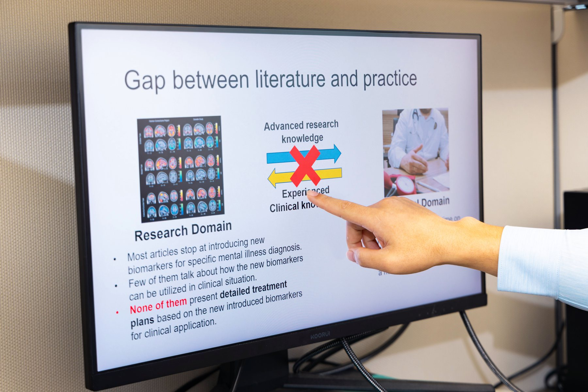
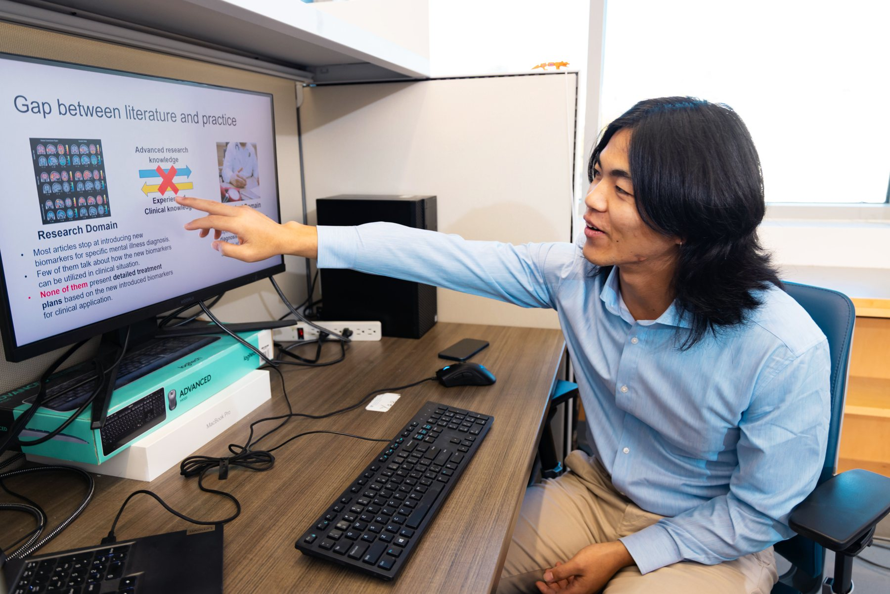
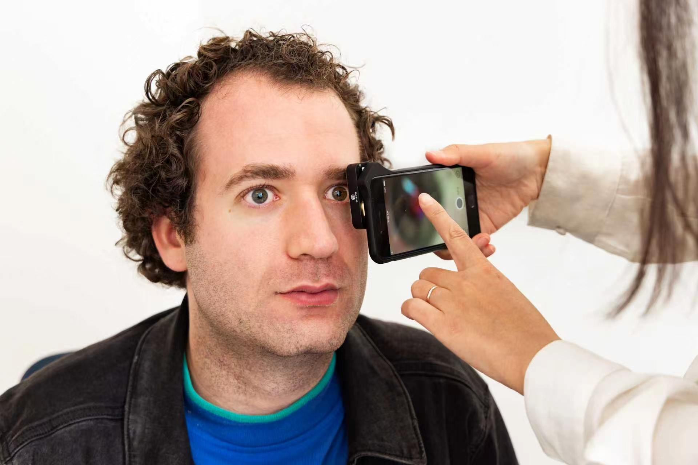
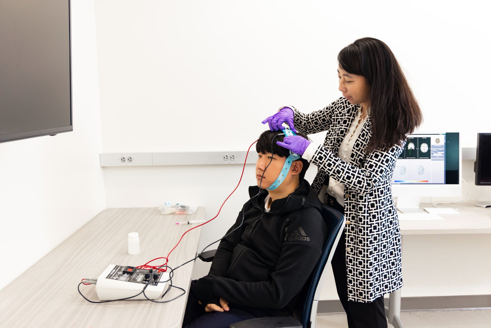
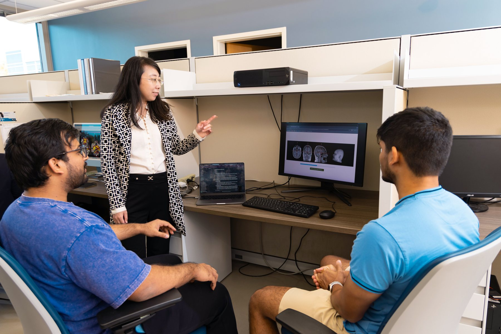

Research at VCII
From Imaging to Intelligence.
AI for the whole imaging cycle: each scan informs the next decision, and each patient's outcome improves the next scan.

Close the loop.
Acquire, understand, reason, decide, intervene, then learn from every outcome. Medical recursive self-improvement (RSI): every patient outcome improves the models, protocols, and next scan, closing the loop of imaging, AI, and healthcare.

What we ask of every image
What should we acquire next, and how?
Adaptive imaging and sensing for each patient.
What is happening, and why?
Mechanism, not only pattern recognition.
What should we do for this patient?
Individualized planning from imaging and the full clinical record.
Which intervention will work best?
Intervention selection with patient-specific digital twins.
How did the patient respond, and what should change?
Follow-up imaging feeds back into the models.
From images to individual care
Imaging-derived phenotypes, read with health records, clinical notes, omics, wearables, and longitudinal outcomes, support each step of a patient's care.
Early diagnosis
Find disease in the image before symptoms do.
Risk stratification
Imaging plus the clinical record, per patient.
Subphenotyping
Image-defined subgroups within one diagnosis.
Personalized prognosis
Individual trajectories, tracked scan by scan.
Precision intervention
Patient-specific digital twins to plan and adapt treatment.

Focus areas
MRI physics and fMRI
Signal formation, functional MRI, and white-matter signals.

AI for brain health
Early Alzheimer's and Parkinson's diagnosis, precision neuromodulation.

Foundation and agentic AI
3D vision foundation models, AI care teams, digital twins.
Brain-inspired AI
Neuroscience principles for next-generation AI.